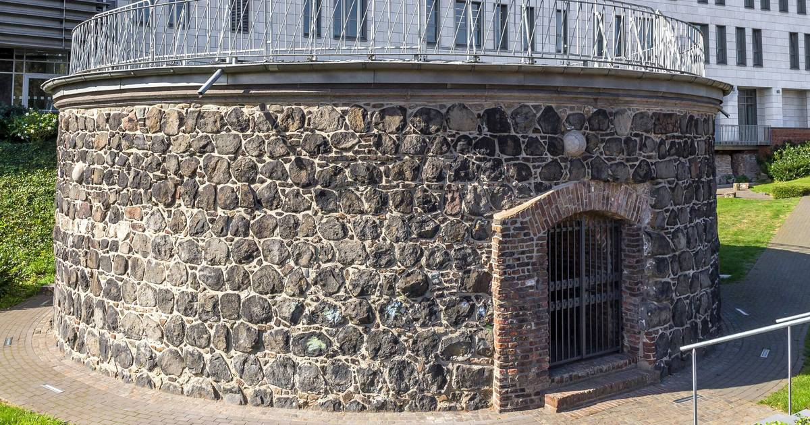

← Zur Startseite
Kehlturm
Zurück
Weiter
Wichtige Informationen
Baujahr: um 1200 n.Chr.
Geschützturm an der östlichen Stadtmauer zum Schutz des Hafens
12m Durchmesser, 2m dicke Mauern
ursprünglich XXXm hoch, heute verändertes Straßenniveau
Bilder

Kehlturm – Außenansicht
Kehlturm – Innenansicht